Atmósferas Planetarias
Por qué una atmósfera se mueve, qué temperatura «debería» tener un planeta y por qué las atmósferas hacen trampa: equilibrio termal, albedo, efecto invernadero y un recorrido por los climas de la Tierra, Venus, Marte, los gigantes de gas, Titán y Plutón.
Una atmósfera es un sistema dinámico: vientos, huracanes, tormentas. Y no hay movimiento sin una fuente de energía. Esta clase parte de la pregunta más simple posible —¿cuánta energía entra y cuánta sale?— y con ese único balance construye casi todo: la temperatura de equilibrio de un planeta, el rol del albedo, el efecto invernadero que explica por qué Venus hierve a 740 K, y la circulación general que dibuja los desiertos y selvas de la Tierra. El cierre es un safari por las atmósferas del Sistema Solar: del casi-vacío marciano de 6 milibares a las 92 atmósferas de Venus, de las bandas de Júpiter al hexágono de Saturno, y hasta la neblina de Plutón. Para una cabeza de ingeniería, es una clase de balance de energía en régimen permanente, con perturbaciones, retroalimentaciones y un sistema que siempre encuentra su punto de operación.
Energía para mover una atmósfera
Sin fuente de energía no hay dinámica. ¿De dónde sale?
La atmósfera terrestre casi nunca está quieta: vientos que avanzan, huracanes, frentes. Todo ese dinamismo requiere energía. La clase pasada (superficies e interiores) se listaron las fuentes que calientan el interior de un planeta: mareas, acreción/impactos, desintegración nuclear y diferenciación (lo denso baja, lo liviano sube, y ese reacomodo libera energía).
Un punto que se repasó con la audiencia: la fuente nuclear en planetas es la fisión (desintegración espontánea de elementos inestables como el uranio, sin necesidad de estímulo externo), no la fusión. La fusión es más eficiente pero requiere temperaturas enormes: es el mecanismo de las estrellas, imposible en un planeta.
Para la atmósfera, en cambio, esas fuentes internas son casi despreciables. Un volcán calienta el aire, la geotermia aporta algo, pero comparado con lo que llega desde arriba es órdenes de magnitud menor. La dinámica atmosférica se alimenta principalmente de la radiación solar.
Es el clásico análisis de órdenes de magnitud antes de modelar: en el balance térmico de la atmósfera, el flujo geotérmico (~0,1 W/m²) es ruido frente a la insolación (~10² W/m² absorbidos). Antes de escribir ecuaciones, identifica el término dominante y desprecia el resto.
Equilibrio termal: el balance de energía
Lo que entra por segundo debe ser igual a lo que sale por segundo.
El concepto central de la clase es el equilibrio termal (o radiativo): en escalas de tiempo largas —miles de millones de años— la energía que un planeta recibe por segundo tiene que ser igual a la que emite por segundo. Si no fueran iguales, la temperatura del planeta subiría o bajaría sin freno. Puede haber días más fríos o calientes, pero el promedio de largo plazo exige balance.
Desarmando cada término
- El área que intercepta luz es un círculo, no una esfera: lo que importa es la sección eficaz . Un cono, un disco o una esfera del mismo radio aparente reciben la misma energía.
- La fracción absorbida es , donde es el albedo: la fracción reflejada.
- El flujo de la estrella a distancia es su luminosidad de cuerpo negro repartida sobre la esfera . Recordatorio: es el área bajo la curva del cuerpo negro, integrada en todas las longitudes de onda (ley de Stefan–Boltzmann).
- Lo emitido: el planeta también radia como cuerpo negro, por toda su superficie: .
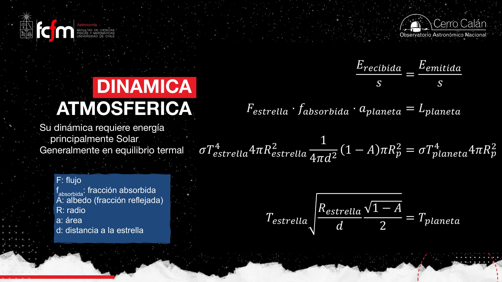
Qué dice (y qué no dice) la fórmula
- Si (refleja el 100%), la temperatura da cero: no absorbe nada.
- Si disminuye, la temperatura sube (te acercas a la estrella).
- Lo más llamativo: el radio del planeta no aparece. El que recibe se cancela con el que emite (salvo el factor 4, que queda en la fórmula). Un planeta grande y uno chico a la misma distancia y con el mismo albedo tienen la misma temperatura de equilibrio.
Es un balance de energía en régimen permanente, idéntico al de un equipo electrónico disipando calor: potencia de entrada = potencia disipada define la temperatura de operación. Como la emisión crece como , el sistema tiene una retroalimentación negativa fuerte: si entra más energía, el planeta se calienta un poco y radia mucho más, encontrando un nuevo punto de equilibrio. El exponente 4 hace al «controlador» muy rígido.
Albedo: la fracción reflejada
El mismo Sol, temperaturas muy distintas según el «color» del suelo.
El albedo es la fracción de la radiación incidente que se refleja; su complemento es la fracción absorbida. Los ejemplos de la clase:
- Nieve fresca: 80–95%. Por eso molesta el reflejo y hay que usar lentes: es casi «tener un sol bajo el suelo».
- La Luna: 6–8%. El polvo lunar es negro: se traga más del 90% de la luz. Ese 6–8% reflejado es todo lo que nos ilumina en luna llena.
- Asfalto: 5–10%. Absorbe casi todo, por eso quema en verano (hubo pilotos de asfalto claro en Los Ángeles para reducir la temperatura urbana).
- Techos: oscuro 8–18% vs. claro 35–50%: la diferencia entre uno y «dos soles» sobre tu cabeza.
- Océanos: 10–60% (depende de la altura del Sol); bosques 10–20%; pasto 25–30%.
- La Tierra completa, promediando todo: 31% reflejado, ~70% absorbido.
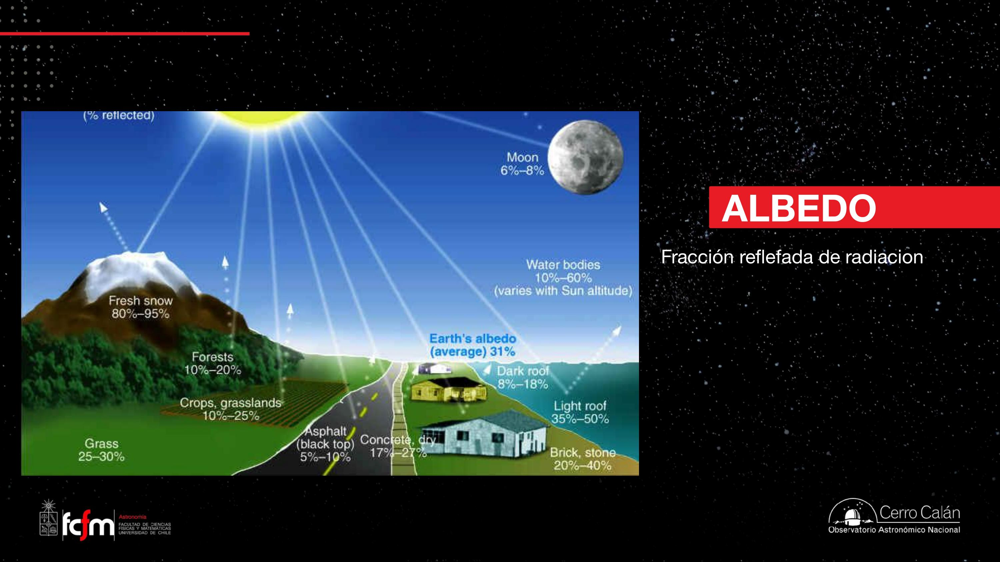
Predicción vs. medición: el gráfico log-log
Los planetas sin atmósfera calzan. Los con atmósfera, no.
La fórmula de equilibrio se puede graficar: temperatura del planeta versus distancia al Sol, con una línea por cada valor de albedo (A = 0, 0.3, 0.7, 0.9). Sobre esas líneas se marcan, para cada cuerpo, una cruz (la temperatura predicha con su albedo real) y un diamante (la temperatura medida en superficie, «con termómetro»).
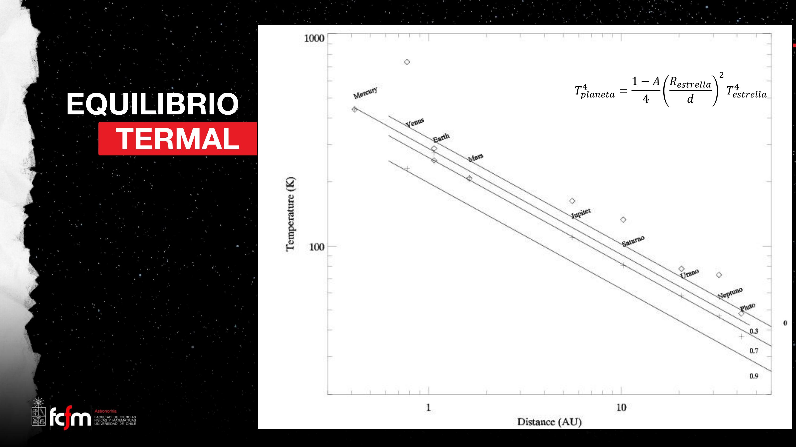
En una regla lineal, un centímetro vale lo mismo en cualquier parte. En una escala logarítmica, la misma distancia sobre el papel representa un factor constante (×10, por ejemplo), no una diferencia constante. Por eso permite graficar en una sola figura cosas separadas por órdenes de magnitud: la distancia Venus–Tierra y la distancia Urano–Neptuno «se ven» comparables, aunque la segunda es enormemente mayor. Para un ingeniero: es el mismo motivo por el que los diagramas de Bode usan décadas.
El patrón de los que no calzan
¿Qué tienen en común Mercurio, la Luna y Marte (calzan) frente a Venus, la Tierra y los gigantes (no calzan)? La atmósfera. Los cuerpos sin atmósfera obedecen la fórmula; los con atmósfera están sistemáticamente más calientes en superficie que lo predicho. Marte, con su atmósfera tenue, apenas se desvía.
El equilibrio termal sigue siendo cierto para todos: visto desde afuera, lo que el planeta emite al espacio sí iguala lo que absorbe. La trampa está en dónde se mide la temperatura: la fórmula predice la temperatura efectiva en el tope de la atmósfera, pero los diamantes son temperaturas de superficie. Lo que hace la atmósfera es redistribuir la energía en altura: en vez de un perfil isotermo, deja «temperaturas chicas arriba y grandes abajo». La misma energía total, repartida de otra forma. Ese mecanismo es el efecto invernadero.
El efecto invernadero
Entra en el visible, no puede salir en el infrarrojo.
El mecanismo tiene dos mitades espectrales. De bajada: el espectro del Sol (pico en el visible, ~5500 K) atraviesa la atmósfera relativamente bien: se transmite un 70–75%. Lo que llega calienta la superficie. De subida: la superficie, mucho más fría (~250–300 K), re-emite como cuerpo negro pero con pico en el infrarrojo (recordar Wien: más frío → pico más rojo). Y en el infrarrojo la atmósfera es casi opaca: solo se transmite un 15–30%, por unas pocas «ventanas».
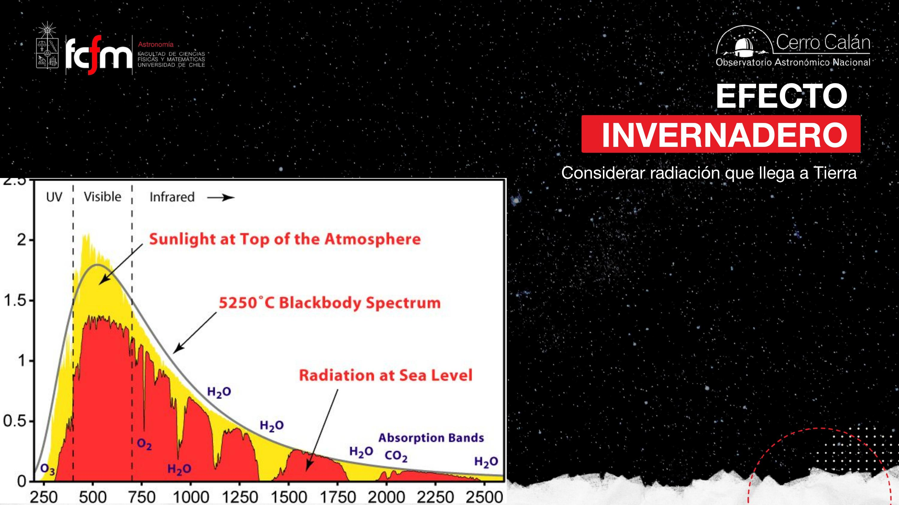
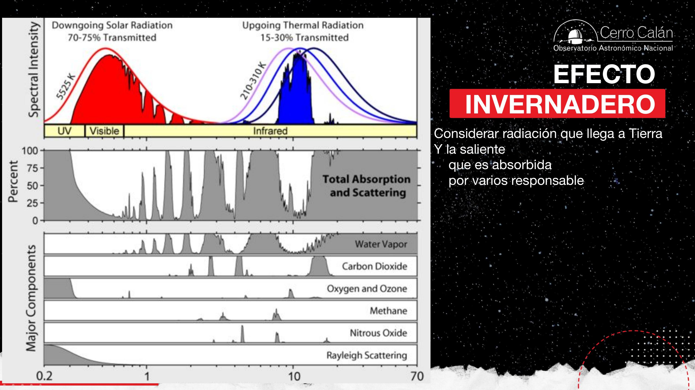
Un lavamanos con el desagüe libre: el agua que entra sale de inmediato, el nivel no sube. Con el desagüe semitapado: el nivel sube hasta que la presión extra de la columna de agua fuerza un caudal de salida igual al de entrada, y ahí se estabiliza. La atmósfera semitapada en el infrarrojo hace lo mismo con la energía: la superficie se calienta (el «nivel» sube), el cuerpo negro saliente se corre hacia el azul, hasta que lo que logra escapar por las ventanas espectrales iguala lo que entra. El equilibrio se restablece, pero con la superficie más caliente. En ingeniería: es un estanque con válvula de salida parcialmente cerrada; el estado estacionario existe, pero con mayor nivel (temperatura) de operación.
Agua vs. CO₂: la ventana y el tapón
El mayor gas invernadero de nuestra atmósfera es el vapor de agua, por lejos (es también la razón de que ALMA busque lugares secos: el agua absorbe muchísimo). Pero el agua siempre estuvo ahí: la vida evolucionó con ese efecto invernadero como condición de borde, y el agua además se autorregula (más temperatura → más evaporación → más nubes → más albedo → menos energía absorbida: retroalimentación negativa). El problema es que la absorción del CO₂ cae justo en la ventana que el agua dejaba libre, cerca del pico del cuerpo negro saliente — una coincidencia de mecánica cuántica (las bandas dependen de las transiciones moleculares y no hay forma de moverlas). El CO₂ que liberamos está tapando la única salida.
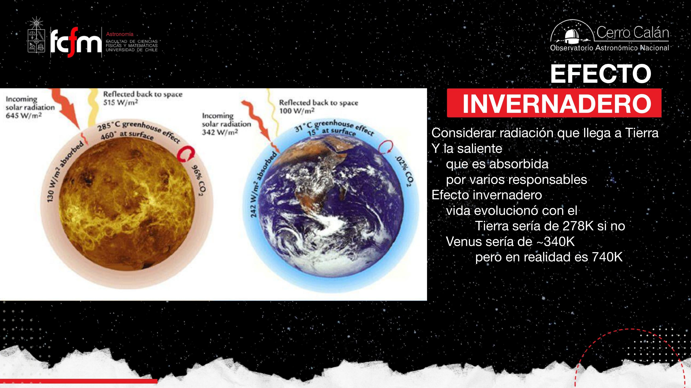
Carbono, civilización y equilibrio
Biomasa vs. carbono fósil, y una hipótesis sobre por qué no vemos extraterrestres.
¿Por qué aparece el CO₂? Por combustión: al liberar carbono en una atmósfera llena de oxígeno, el CO₂ se forma solo. El carbono es una molécula «sociable»: le gusta juntarse con otras y esas uniones almacenan energía química (romper un CH₄ libera el carbono y la energía que lo unía). Un árbol es una fábrica que, vía fotosíntesis (energía solar), captura CO₂ del aire y usa el carbono como ladrillo estructural.
- Quemar biomasa (leña, la fogata del primate) devuelve a la atmósfera carbono que estuvo ahí hace poco: es un ciclo cerrado atmósfera → árbol → fogata → atmósfera.
- Quemar carbono fósil (petróleo —principalmente algas antiguas enterradas en procesos anaeróbicos—, carbón de mina, gas) inyecta carbono que estaba fuera de circulación hace millones de años. Ese es el carbono que rompe el equilibrio.
- Mantener el carbono capturado (casas y muebles de madera, bosques en pie) lo saca de la atmósfera; las plantaciones de crecimiento rápido capturan más rápido que el bosque nativo, pero a costa de biodiversidad — todo está acoplado.
La energía almacenada (leña, fósiles) es la energía fácil; usar el fotón del día (solar, eólica) es tecnológicamente mucho más difícil. Como el carbono es un elemento común en cualquier química planetaria, se especula que toda civilización pasará por esta etapa de contaminar con carbono su propia atmósfera. Quizás sea una «prueba de fuego» que pocas superan — y hasta una posible respuesta a por qué no vemos extraterrestres. También se comentó por qué es tan difícil modelar el calentamiento global: geografía, volcanes, nubes... predecir el grado exacto por año es casi imposible, pero el mecanismo físico del forzamiento por CO₂ es sólido.
Vientos: presión, Coriolis y equilibrio
Por qué el viento en equilibrio no va de la alta a la baja presión, sino en círculos.
El movimiento horizontal del aire está gobernado por tres términos: el gradiente de presión (empuja de alta a baja presión), la fuerza de Coriolis (pseudo-fuerza por la rotación del planeta, desvía a la izquierda o derecha según el hemisferio) y la fuerza centrífuga.
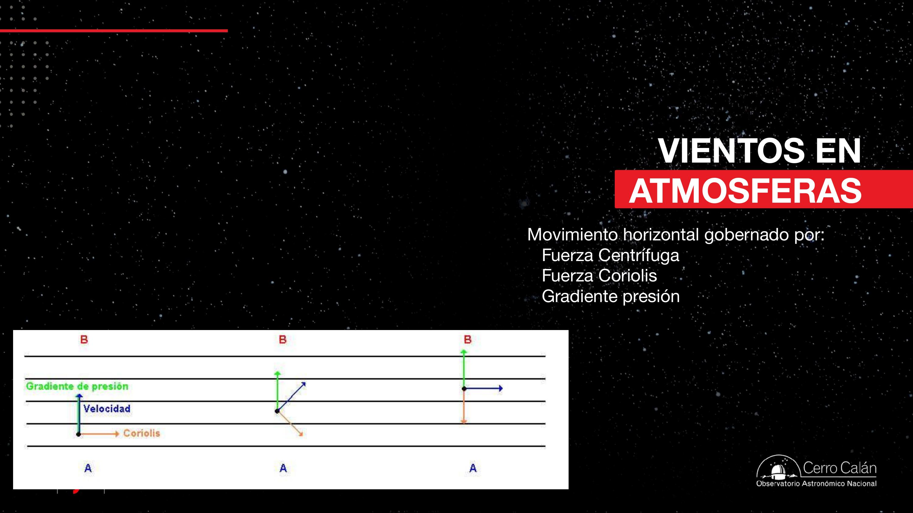
Resultado: el viento en equilibrio (geostrófico) no cae hacia el centro de baja presión: gira alrededor de los centros de alta y baja, siguiendo las isobaras. Cuando veas un mapa del tiempo con una «A» y una «B», imagina los vientos dando vueltas en torno a ellas; el sentido (horario/antihorario) depende del hemisferio y de si es alta o baja.
¿El agua gira al revés en cada hemisferio? Técnicamente Coriolis actúa, pero en una taza de baño las irregularidades de la superficie dominan por completo: el efecto solo es relevante a escalas grandes (huracanes, sistemas sinópticos). Buen ejemplo de comparar magnitudes de términos antes de atribuir causas.
Circulación general: tres celdas, todos los climas
Un modelo simplísimo que explica el Amazonas, el Sahara y el desierto de Atacama.
La receta de la circulación general: el ecuador se calienta más → el aire caliente sube (convección); los polos se enfrían → el aire baja. Sin rotación habría una sola celda gigante de ecuador a polo. Pero Coriolis rompe esa celda en tres por hemisferio (Hadley, Ferrel y polar), creando patrones globales y corrientes de chorro.
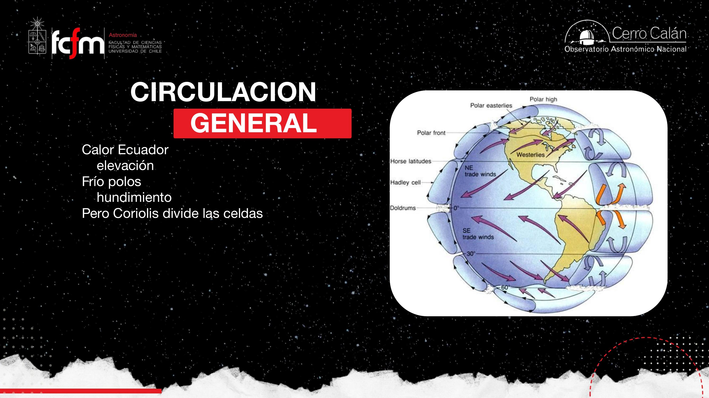
De las celdas a los mapas
La clave es el vapor de agua: aire que sube se enfría → el vapor condensa → nubes y lluvia. Aire que baja ya llovió arriba → llega seco.
- Zona de subida ecuatorial: lluvia constante → selvas (Amazonas, África central, sudeste asiático).
- Zona de bajada (~30°): aire seco → ahí están casi todos los desiertos: Sahara, Atacama, Australia. Australia «nunca va a ser una selva»: lo fija Coriolis y la geografía.
- Chile: en el norte los vientos superficiales llegan desde Argentina y se secan al bajar los Andes → desierto; en el sur llegan desde el océano cargados de agua → lluvia en el sur de Chile y sombra seca en la Patagonia argentina.
El Amazonas está donde está por la posición de la celda, no por accidente: si se deforesta, no hay «otro lugar» donde vaya a crecer un pulmón equivalente (habría que esperar a que la tectónica mueva el continente). Eso da sentido a proteger esas zonas específicas y, según se comentó, a instrumentos como los bonos de carbono.
Tierra: perfil vertical y estratopausa
Quién calienta desde abajo, quién desde arriba y quién a media altura.
Ficha de la Tierra según la clase: 3 celdas de circulación general por hemisferio, presión superficial de 1 bar, nubes de H₂O, perfil de temperatura con estratopausa, auroras, y en proceso de calentamiento global.
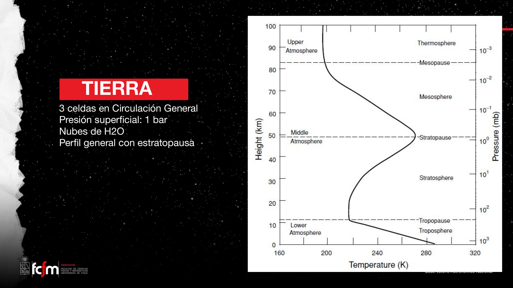
Lectura física del perfil, como en la clase:
- Troposfera (T baja con la altura): el suelo calienta desde abajo — es el efecto invernadero el que absorbe la radiación saliente cerca de la superficie. Más arriba, más frío: lo que uno vive en la montaña.
- Bump a media altura (estratosfera): el ozono absorbe el ultravioleta solar y calienta esa capa. Ese máximo local es la estratopausa. (De paso: el agujero de ozono lo causan los CFC de los aerosoles, y aparece en los polos por los patrones de circulación y los jets.)
- Termosfera (T sube arriba): el Sol calienta directamente desde arriba; ahí también interactúan las partículas del viento solar que producen auroras.
- El vapor de agua vive abajo: por eso los observatorios (ALMA, sitios altos y secos) se instalan sobre la mayor parte del agua.
El perfil T(z) es como un diagnóstico de un sistema térmico multicapa: cada cambio de pendiente indica dónde se está inyectando calor. Tres fuentes (superficie/invernadero, ozono/UV, termosfera/Sol) → tres regímenes con sus «pausas» entre medio. Un planeta sin absorbente a media altura (Venus, Marte) simplemente no tiene ese bump.
Venus: el invernadero desbocado
+400 grados de efecto invernadero, 92 bares, nubes de ácido sulfúrico.
Venus muestra que el efecto invernadero no tiene límite suave: su temperatura de equilibrio sería ~340 K con nuestros números (232 K con su albedo real de nubes), pero la superficie está a 740 K — el invernadero de una atmósfera de 96% CO₂ le suma del orden de +400 grados. «Si tapo todo, me voy al chancho».
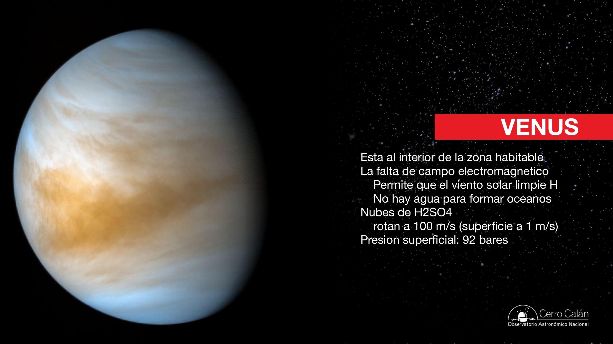
La cadena causal contada en clase: la falta de campo magnético dejó a Venus sin escudo contra el viento solar → el hidrógeno, liviano, escapó → sin H no se forma H₂O → sin océanos no hay quien capture el CO₂ (los océanos son grandes capturadores de gases invernadero) → el CO₂ se acumuló y el invernadero se desbocó. Pista química: sus nubes son de H₂SO₄ (un H por cada dos O... lo inverso del H₂O: química empobrecida en hidrógeno).
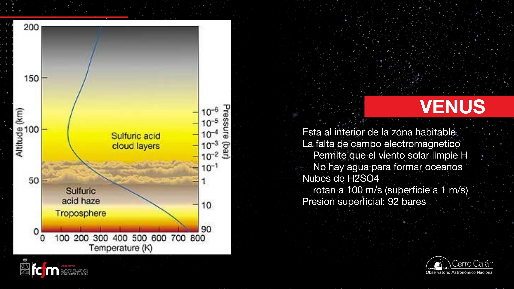
A ~50 km de altura hay una franja con 1 bar y temperatura terrestre: un colono no necesitaría traje presurizado ni aislamiento térmico, «solo» protección anticorrosiva contra el ácido sulfúrico. La clase recomendó una novela de ciencia ficción con una colonia flotante en Venus retratada de forma realista (el título no quedó registrado con claridad en el audio).
Marte: polvo, viento débil y metano
6 milibares: una atmósfera rápida pero sin momentum, con tormentas globales.
Marte tiene solo 6 mbar de presión superficial (~170 veces menos que la Tierra; la clase citó «unas 200 veces»). Una atmósfera tan tenue no tiene inercia térmica: se calienta al iluminarla y se enfría apenas se va el Sol. Resultado: ~60 K de diferencia entre día y noche, fuertes gradientes de presión y grandes vientos cerca del terminador (la línea que separa día y noche). Sus nubes son de CO₂ (hielo seco) y de hielo de agua.
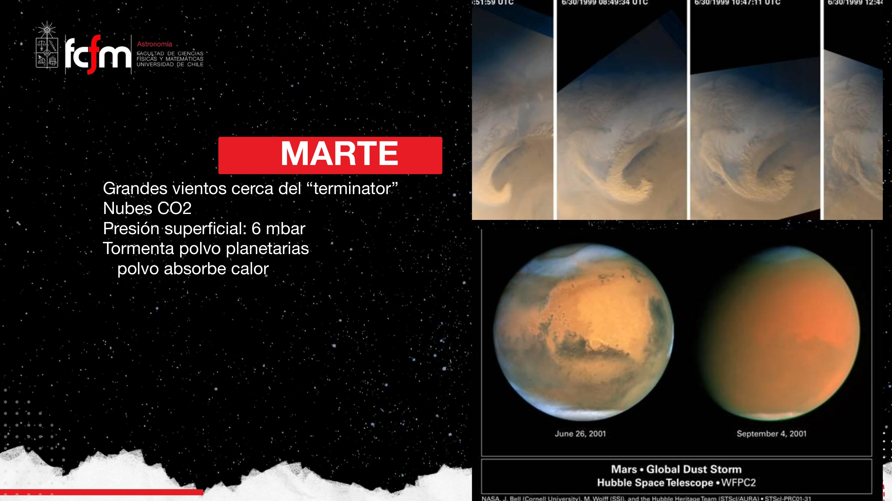
Velocidad no es momentum: a 6 mbar hay pocas moléculas chocándote. Un río a 10 m/s te arrastra; aire terrestre a 10 m/s te despeina; aire marciano a 10 m/s casi ni se siente. Por eso la escena inicial de El marciano (la tormenta que derriba equipos) es lo único falso de la película: el resto es muy realista. Los dust devils (torbellinos de polvo) sí son reales y dejan huellas oscuras fotografiadas en la superficie: el polvo es tan liviano que cualquier cosa lo levanta.
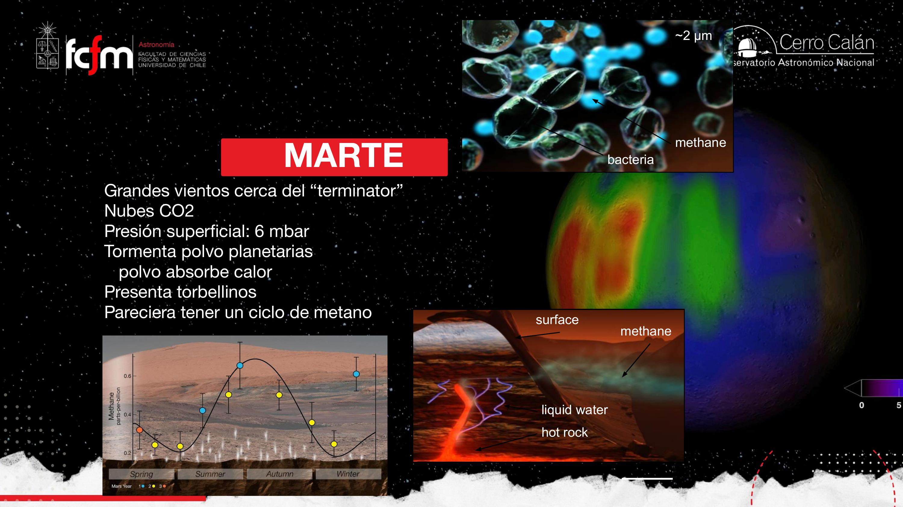
El punto fino: el CH₄ es frágil — los fotones solares lo destruyen en ~100 años (escala citada en clase). Que suba y baje estacionalmente significa que algo lo está reponiendo hoy. La bajada rápida también requiere explicación (el Sol lo rompe, pero no tan rápido). Es indicio de biología o de química desconocida: en cualquier caso, interesante. El perfil térmico de Marte, como el de Venus, no tiene estratopausa (no hay capa de ozono que caliente a media altura).
Gigantes de gas: bandas, tormentas e interiores
¿Viento respecto a qué? Y por qué los colores son nubes, no atmósfera.
Primera sutileza: en un planeta sin superficie, ¿respecto a qué mides el viento? Se usa la rotación del campo magnético, que se asume anclado al núcleo. Con ese estándar, Júpiter y Saturno muestran vientos zonales: bandas alternadas corriendo hacia el este y el oeste.
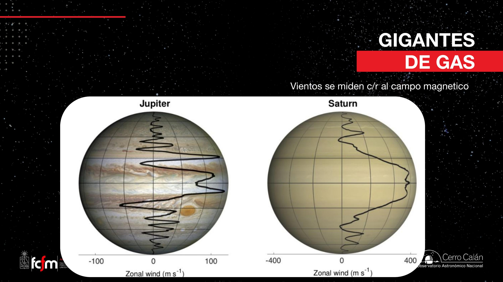
Los colores son nubes, no atmósfera. Entre banda y banda también hay gas, solo que transparente. Lo visible es condensación: a cada altura le corresponde una temperatura, y a cada temperatura condensa una especie distinta — por eso las bandas de colores se corresponden con alturas. En Júpiter: nubes de amoníaco (más altas, cafés claras), hidrosulfuro de amonio (más rojas), y agua (blancas) escondidas debajo. En Urano/Neptuno, arriba de todo, nubes azules de metano. Muchos signos de interrogación en los diagramas: sabemos poco, se han explorado poco.
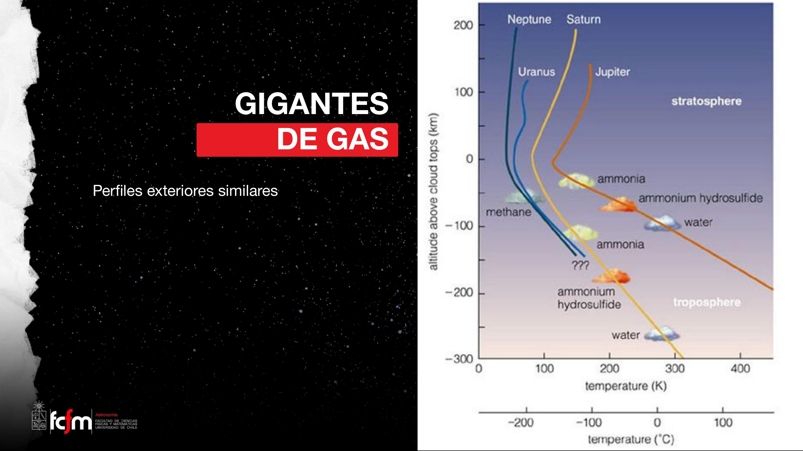
Tormentas con personalidad
- Gran Mancha Roja (Júpiter): un óvalo estable por siglos, «demasiado estable», y caliente. No tiene ojo: no es un hoyo en la atmósfera, es nubes. Los huracanes con ojo requieren una condición de borde cercana (como la superficie terrestre bajo nuestra atmósfera delgada; el ojo del desagüe de la tina se forma recién cuando queda poca agua).
- Saturno: sí tiene huracanes con ojo, tormentas eléctricas que duran meses y son más grandes que la Tierra, y el famoso hexágono polar: una onda estacionaria, reproducible en laboratorio con las condiciones de borde adecuadas. El transporte de energía por ondas parece más notorio en Saturno que en Júpiter.
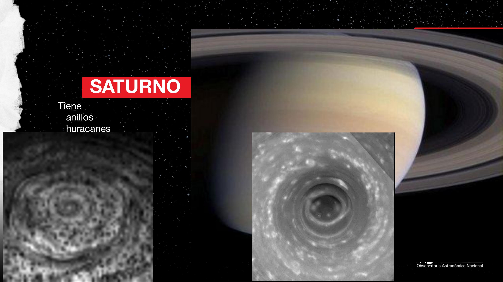
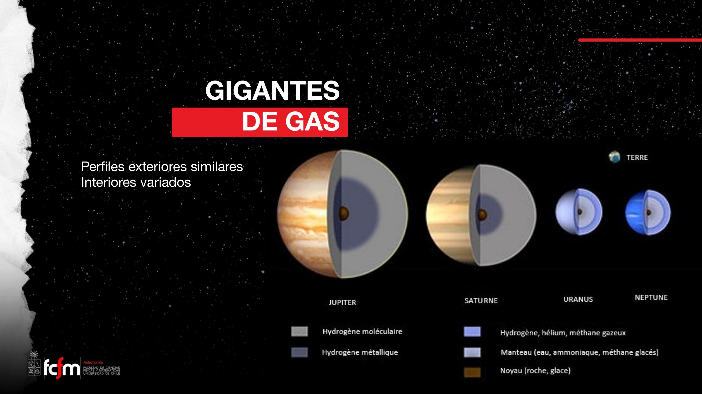
Pregunta de la audiencia: si todo es gas, ¿dónde empieza la atmósfera y dónde el planeta? Respuesta: la distinción es difusa — la atmósfera es parte del planeta; lo visible son las nubes y todo lo demás (visible e invisible) es planeta. Las «superficies» que se citan son convenciones (por ejemplo, el nivel de 1 bar).
Urano y Neptuno: el que rompe el equilibrio
El planeta «fome» y el planeta que emite el doble de lo que recibe.
Urano está inclinado ~90°: rota «de lado», con estaciones extremas (un polo en día perpetuo, el otro en noche). Y sin embargo no muestra gradiente térmico significativo ni estructura: sin bandas, sin tormentas notorias, convección de gran escala sin remolinos. Promete y no cumple: cualquier manchita oscura es noticia. Neptuno, más lejos y con menos fotones, es paradójicamente mucho más activo: bandas, tormentas, manchas. Ambos son principalmente hidrógeno con compuestos hidrogenados (CH₄, NH₃...) y tienen casi la misma temperatura exterior pese a la gran diferencia de distancia.
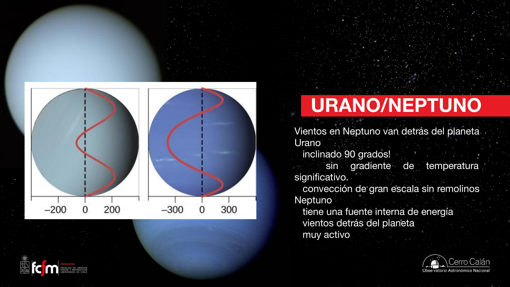
Neptuno emite el doble de la energía que recibe: por cada joule solar que absorbe, radia dos. Es la excepción anunciada al principio de la clase: tiene una fuente interna de energía cuyo mecanismo exacto sigue en discusión. Eso probablemente explica su actividad pese a la lejanía.
Titán, Tritón y Plutón
Una luna con ciclo «hidrológico» de metano y una atmósfera que se niega a colapsar.
Titán (luna de Saturno): 100 K en superficie, 1,5 bar de presión —más que la Tierra siendo más chica— porque su atmósfera es densísima (~5× la densidad de la terrestre), opaca en casi todo el visible-IR. Tiene un ciclo de metano/etano análogo al ciclo del agua terrestre: se evapora, condensa, llueve y forma lagos (solo en la zona norte; se ven grandes en los mapas por la deformación de la proyección). Es el único cuerpo fuera de la Tierra con un ciclo así.
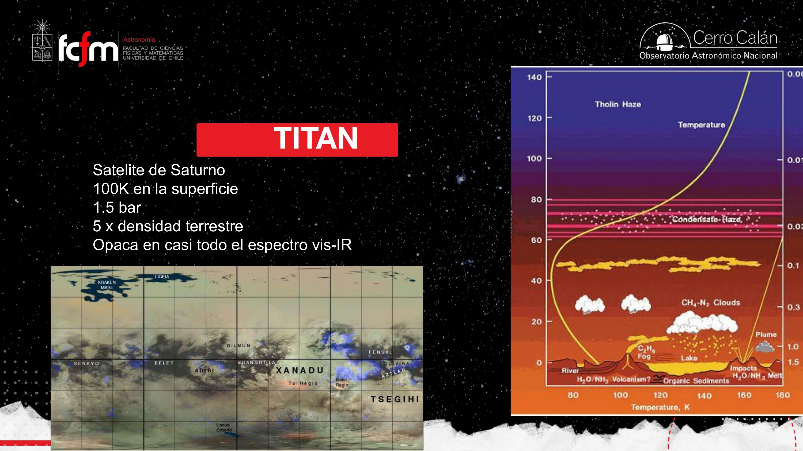
Tritón (luna de Neptuno, la retrógrada de la clase anterior) también tiene atmósfera: se le han visto nubes tenues. Y Plutón: New Horizons fotografió su atmósfera a contraluz (metida en el «eclipse» del Sol detrás de Plutón, con el instrumento LORRI). Por su órbita muy excéntrica, los modelos predecían que al alejarse del Sol la atmósfera debía colapsar (congelarse sobre la superficie)... pero misteriosamente no ha colapsado.
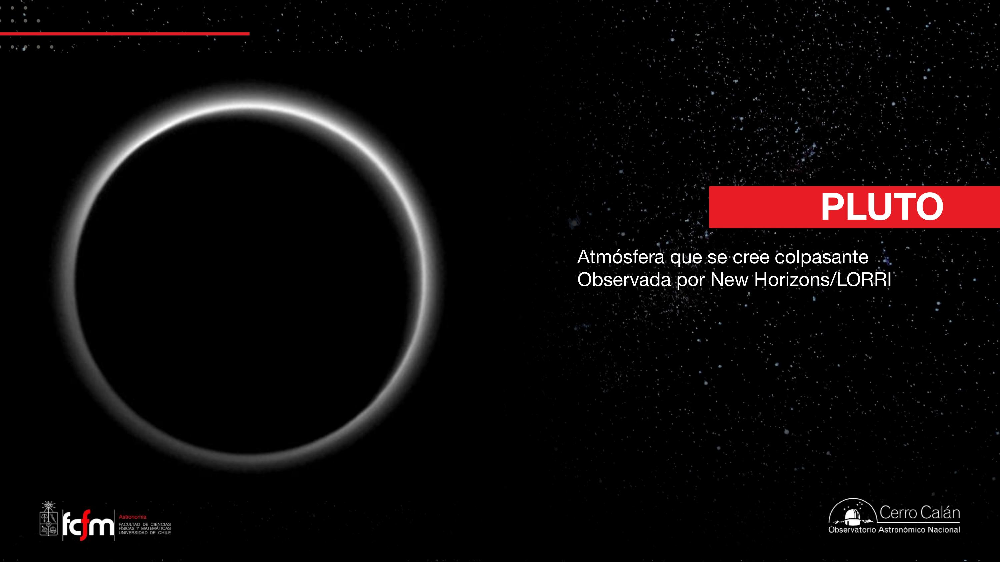
La clase (y el Módulo I) cierra con Wanderers, el cortometraje de Erik Wernquist narrado por Carl Sagan: turismo en los anillos de Saturno, zeppelines en Marte (atardeceres azules en el planeta rojo), vuelo a pura ala en Titán, minería de asteroides. Un futuro posible si pasamos la prueba del calentamiento: allá afuera el aire y el agua son escasos, y la abundancia terrestre nos malacostumbró. Aprender a no desperdiciar recursos es el prerrequisito del Sistema Solar.
Conceptos clave
Tabla de repaso rápido.
| Concepto | Qué es / valor | Por qué importa |
|---|---|---|
| Equilibrio termal | Sin balance, la temperatura sube o baja sin freno en escalas largas | |
| Sección eficaz | El planeta intercepta luz como círculo: | Cono, disco o esfera del mismo radio reciben lo mismo |
| Albedo A | Fracción reflejada (nieve ~0.9, Luna ~0.07, Tierra 0.31) | Define la fracción absorbida del balance |
| T de equilibrio | No depende del radio del planeta; falla en superficie si hay atmósfera | |
| Efecto invernadero | Atmósfera transparente al visible, opaca al IR saliente | Redistribuye energía: superficie más caliente que el tope (lavamanos semitapado) |
| H₂O vs CO₂ | El agua es el mayor gas invernadero; el CO₂ tapa su «ventana» | La banda del CO₂ cae en el pico del cuerpo negro saliente |
| Biomasa vs fósil | Carbono reciente en ciclo vs. carbono enterrado hace millones de años | Solo el fósil agrega carbono «nuevo» a la atmósfera |
| Viento geostrófico | Gradiente de presión ⟂ Coriolis: viento por las isobaras | Los vientos giran en torno a altas/bajas, no hacia ellas |
| Circulación de 3 celdas | Convección ecuador–polo partida por Coriolis | Explica selvas (subida) y desiertos (~30°, bajada) |
| Estratopausa | Máximo de T a ~50 km por el ozono (absorbe UV) | La Tierra la tiene; Venus y Marte no |
| Venus | 92 bar, 96% CO₂, nubes H₂SO₄, superrotación 100 m/s | Invernadero desbocado: +~400 K sobre el equilibrio (740 K) |
| Marte | 6 mbar, nubes CO₂, ΔT día/noche ~60 K, tormentas de polvo globales | Sin inercia térmica; vientos veloces pero sin momentum; ciclo de metano |
| Vientos de gigantes | Se miden respecto a la rotación del campo magnético | No hay superficie de referencia; bandas zonales este/oeste |
| Nubes = condensación | Cada especie condensa a su temperatura → a su altura | Los colores de Júpiter son capas de NH₃, NH₄SH y H₂O |
| Hidrógeno metálico | H tan comprimido que los electrones quedan libres (conductor) | Interior de Júpiter/Saturno; núcleo de pesados ~tamaño Tierra |
| Neptuno | Emite ~2× lo que recibe del Sol | La excepción al equilibrio termal: fuente interna en discusión |
| Titán | 1,5 bar, 100 K, ciclo de metano/etano con lagos | Único ciclo tipo «hidrológico» fuera de la Tierra |
| Plutón | Atmósfera vista a contraluz por New Horizons | Debía colapsar según los modelos y no lo ha hecho |
Exámenes de práctica
10 exámenes de 5 preguntas (3 de alternativas autocorregibles + 2 de respuesta escrita).